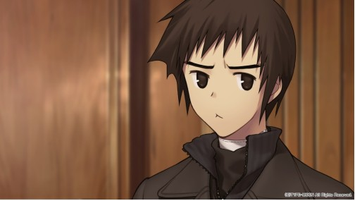

青子と有珠の恋愛下手ばかりネタにされるけど

草の字も中々悲惨じゃないか？親友の探偵業に連れてかれたせいで本人は恋愛もできないのに親友は嫁さんちゃんと貰ってるとか
本人が悲壮感ないだけで
恋愛できないっていうかしなかっただけでは？ぶっちゃけその気になれば良い人くらいこいつの性格なら見つかるでしょ
草の字の場合良くも悪くもそういう方面の我欲が薄いしまあ……
女体に興味があるとはいえ
「何も求めないように、何も望まないように。それがあなたの全てです。あなたには何もないのです」と洗脳紛いの教えを魂まで染み込ませられてるので自分から積極的に幸せを掴みに行く思考がそもそも無い
>>5
都会に降りて色々あってようやく「ただ誰か（青子）を助けたい」ということが自分の望みだったと気づいたけどそれでもまだまだ人間として生まれたてみたいなもん
ほぼアルクェイドじゃん
昨日と同じ今日を繰り返す日々で明日のことを考える余裕も理由も無かった人間がそう簡単に将来の幸せを望む思考になれるかというとね…
隈乃温泉の頃でも人間始めて十年ちょっとだしなぁ
普通の人より人を始めたのが遅かったんだから人として自分を育てなおす期間も必要だっただろうし実際それで普通の人になってきてるんだからそれでよくない？>>12
聖杯についてのマイルーム台詞で「何でも願いが叶うなら休み、定期券、乗用車辺りが良いかな…いや蒼崎の言うこと意味わからないし蒼崎の翻訳機が良いか…（要約）」みたいな風に目の前の未来を考えるようになってるのは人間らしく成長してきてると思う
自分から求める思考が無いだけで青子有珠への好感度はバカ高いので先に動いた方が勝者となる勝ち戦の筈なんだがなぁ…
尚同じく好感度がバカ高い人間が一番に動いた結果が探偵助手ルートという
鳶丸が全てを得過ぎている…
けど殿下も草の字にいい人が出来たら素直に背中押してくれるタイプだよ
アラサーの草の字は本当にモブにしか見えない
本編描写や特典小説の描写（青子に彼氏疑惑ができたらモヤるけど自分が青子とどうこうなりたい欲求が皆無）を見るに、青子という人間に対して強い憧れがある故か自分のものにしたい・結ばれたいみたいな感情はマジで一切無いけどそれはそれとして誰のものにもならないでほしい的な感情がちょっとありそうなんだよな
コメント